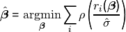
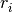
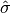
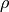
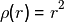
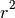
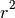
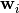

sprm¶
Sparse partial robust M regression (SPRM) is a sparse and robust alternative to PLS that can be calculated efficiently (Hoffmann, Serneels, Filzmoser,and Croux 2015). The subpackage is organized slightly differently from the other two mainsubpackages. Because SPRM combines the virtues of robust regression with sparse dimension reduction, besides the SPRM estimators itself, each of these building blocks are provided themselves as class objects that can be deployed in sklearn pipelines. The class objects rm, snipls and sprm are sourced by default when importing direpack.
Robust M regression¶
M regression is a generalization of least squares regression in the sense that it minimizes a more general objective that allows to tune the estimator’s robustness. In M regression, the vector of regression coefficients is defined as:
(1)¶
where  are the casewise regression residuals and  is a robust scale estimator thereof. The  function defines the properties of the estimator.
Identity to the least squares estimator is obtained if , but robustness can be introduced by taking a different function,
for instance a function that is approximately quadratic for small (absolute)  , but increases more slowly than  for larger values of .
Objective (1) can be solved numerically, but it is well known that its solution can equivalently be obtained through an iteratively reweighting least squares (IRLS),
which is how it is implemented in sprm. In the package, the Fair, Huber or Hampel reweighting functions can be picked, which will lead to different robustness properties.
, but increases more slowly than  for larger values of .
Objective (1) can be solved numerically, but it is well known that its solution can equivalently be obtained through an iteratively reweighting least squares (IRLS),
which is how it is implemented in sprm. In the package, the Fair, Huber or Hampel reweighting functions can be picked, which will lead to different robustness properties.
Sparse NIPALS¶
A second building block in the package is the SNIPLS algorithm. It is a sparse version of the NIPALS algorithm for PLS and as such, essentially a computationally efficient implementation of univariate sparse PLS. Again, the SNIPLS components are linear combinations of the original variables through a set of weighting vectors  that maximize:
(2)¶
which in sparse PLS is typically maximized through a surrogate formulation. However, in this case, the exact solution to Criterion (2) can be obtained, which is what the SNIPLS algorithm builds upon. For details on the algorithm, the reader is referred to Hoffmann, Filzmoser, Serneels, and Varmuza (2016). At this point, remark that the SNIPLS algorithm has also become a key building block to analyze outlyingness (Debruyne, Höppner, Serneels,and Verdonck 2019).
Sparse partial robust M¶
Sparse partial robust M dimension reduction unites the benefits of SNIPLS and robust M estimation: it yields an efficient sparse PLS dimension reduction, while at the same time, it is robust against both leverage points and virtual outliers through robust M estimation. It is defined similarly as in (2) but instead maximizing a weighted covariance, with case weights that depend on the data. Consistent with robust M estimation, it can be calculated through iteratively reweighting SNIPLS. SPRM improves upon the original reweighted PLS proposal by (i) yielding a sparse estimate, (ii) having a reweighting scheme as well as starting values that weight both in the score and residual spaces and (iii) by allowing different weight functions, the most tuneable one being the Hampel function.
Usage¶
-
class
direpack.sprm.sprm.sprm(n_components=1, eta=0.5, fun='Hampel', probp1=0.95, probp2=0.975, probp3=0.999, centre='median', scale='mad', verbose=True, maxit=100, tol=0.01, start_cutoff_mode='specific', start_X_init='pcapp', columns=False, copy=True)[source]¶ SPRM Sparse Partial Robust M Regression
Algorithm first outlined in: Sparse partial robust M regression, Irene Hoffmann, Sven Serneels, Peter Filzmoser, Christophe Croux, Chemometrics and Intelligent Laboratory Systems, 149 (2015), 50-59.
- Parameters
eta (float.) – Sparsity parameter in [0,1)
n_components (int) – min 1. Note that if applied on data, n_components shall take a value <= min(x_data.shape)
fun (str) – downweighting function. ‘Hampel’ (recommended), ‘Fair’ or ‘Huber’
probp1 (float) – probability cutoff for start of downweighting (e.g. 0.95)
probp2 (float) – probability cutoff for start of steep downweighting (e.g. 0.975, only relevant if fun=’Hampel’)
probp3 (float) – probability cutoff for start of outlier omission (e.g. 0.999, only relevant if fun=’Hampel’)
centre (str) – type of centring (‘mean’, ‘median’, ‘l1median’, or ‘kstepLTS’, the latter recommended statistically, if too slow, switch to ‘median’)
scale (str) – type of scaling (‘std’,’mad’, ‘scaleTau2’ [recommended] or ‘None’)
verbose (booleans) – specifying verbose mode
maxit (int) – maximal number of iterations in M algorithm
tol (float) – tolerance for convergence in M algorithm
start_cutoff_mode (str,) –
- values:’specific’ will set starting value cutoffs specific to X and y (preferred);
any other value will set X and y stating cutoffs identically. The latter yields identical results to the SPRM R implementation available from CRAN.
start_X_init (str,) –
- values:
- ’pcapp’ will include a PCA/broken stick projection to
calculate the staring weights, else just based on X;
- any other value will calculate the X starting values based on the X
matrix itself. This is less stable for very flat data (p >> n), yet yields identical results to the SPRM R implementation available from CRAN.
colums ((def false) Either boolean, list, numpy array or pandas Index) –
if False, no column names supplied if True,
- if X data are supplied as a pandas data frame, will extract column
names from the frane
throws an error for other data input types
- if a list, array or Index (will only take length x_data.shape[1]),
the column names of the x_data supplied in this list, will be printed in verbose mode
copy ((def True) boolean, whether to copy data) –
-
fit(X, y)[source]¶ Fit a SPRM model.
- Parameters
X (numpy array) – Input data.
y (vector or 1D matrix) – Response data
-
class
direpack.sprm.snipls.snipls(eta=0.5, n_components=1, verbose=True, columns=False, centre='mean', scale='None', copy=True)[source]¶ SNIPLS Sparse Nipals Algorithm
- Algorithm first outlined in:
Sparse and robust PLS for binary classification, I. Hoffmann, P. Filzmoser, S. Serneels, K. Varmuza, Journal of Chemometrics, 30 (2016), 153-162.
- Parameters
eta (float.) – Sparsity parameter in [0,1)
n_components (int,) – min 1. Note that if applied on data, n_components shall take a value <= min(x_data.shape)
verbose (Boolean (def true)) – to print intermediate set of columns retained
columns (Either boolean, list, numpy array or pandas Index) –
(def false) if False, no column names supplied if True,
- if X data are supplied as a pandas data frame, will extract column
names from the frane
throws an error for other data input types
- if a list, array or Index (will only take length x_data.shape[1]),
the column names of the x_data supplied in this list, will be printed in verbose mode
centre (str,) – type of centring (‘mean’ [recommended], ‘median’ or ‘l1median’),
scale (str,) – type of scaling (‘std’,’mad’ or ‘None’)
copy ((def True): boolean,) – whether to copy data. Note : copy not yet aligned with sklearn def - we always copy
-
fit(X, y)[source]¶ Fit a SNIPLS model.
- Parameters
X (numpy array) – Input data.
y (vector or 1D matrix) – Response data
Dependencies¶
pandas
numpy
matplotlib.pyplot
for plotting cross-validation results: sklearn.model_selection.GridSearchCV
References¶
Irene Hoffmann, Sven Serneels, Peter Filzmoser, Christophe Croux, Sparse partial robust M regression, Chemometrics and Intelligent Laboratory Systems, 149 (2015), 50-59.
Sven Serneels, Christophe Croux, Peter Filzmoser, Pierre J. Van Espen, Partial robust M regression, Chemometrics and Intelligent Laboratory Systems, 79 (2005), 55-64.
Hoffmann I., P. Filzmoser, S. Serneels, K. Varmuza, Sparse and robust PLS for binary classification, Journal of Chemometrics, 30 (2016), 153-162.
Filzmoser P, Höppner S, Ortner I, Serneels S, Verdonck T. Cellwise robust M regression. Computational Statistics and Data Analysis,147 (2020).